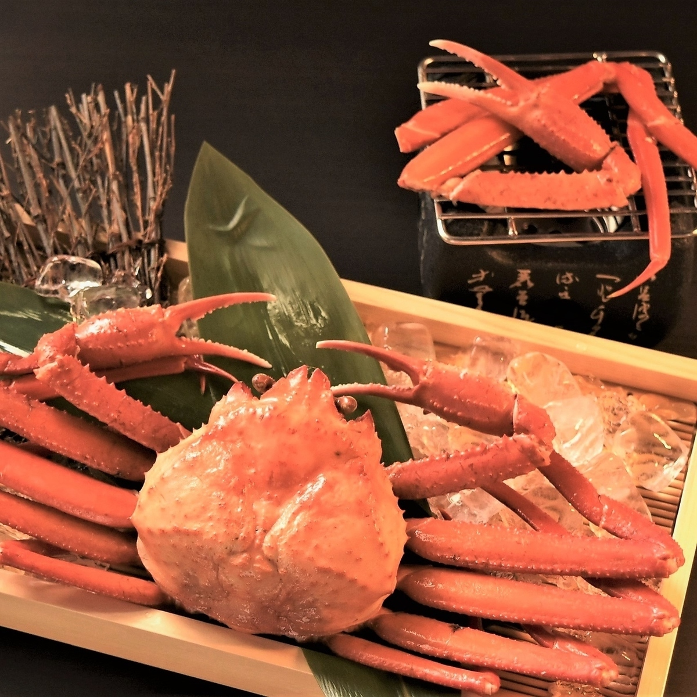
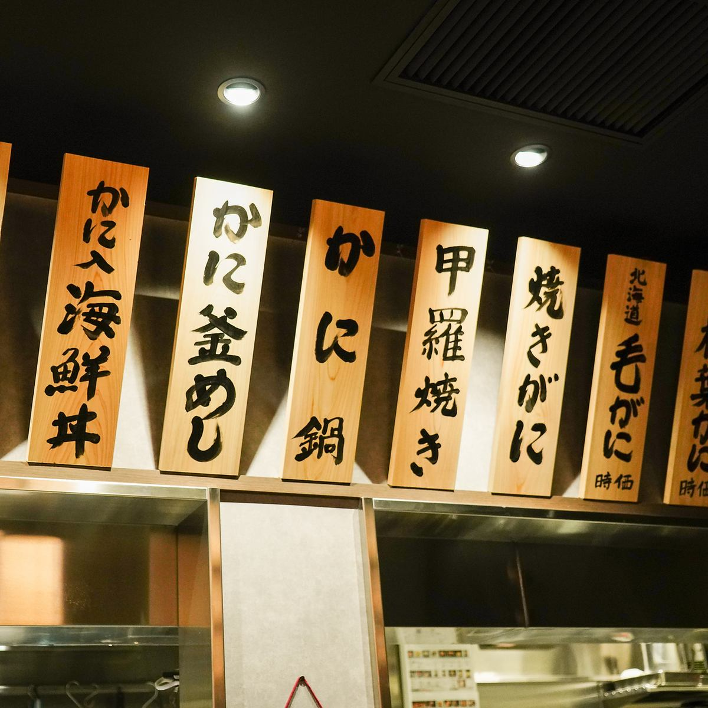
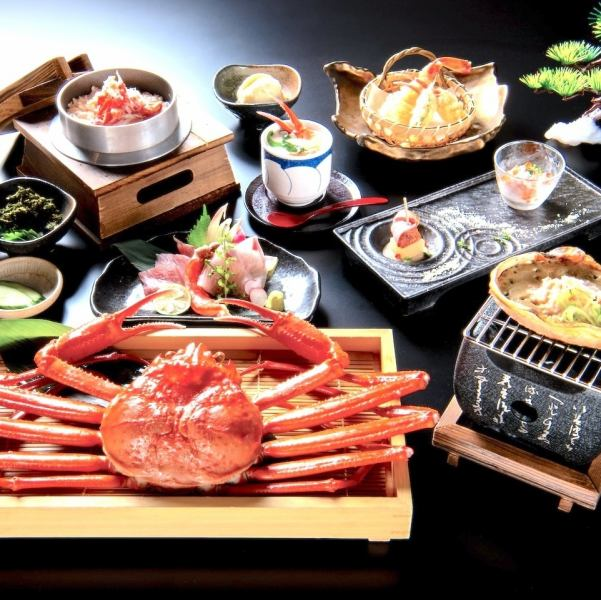
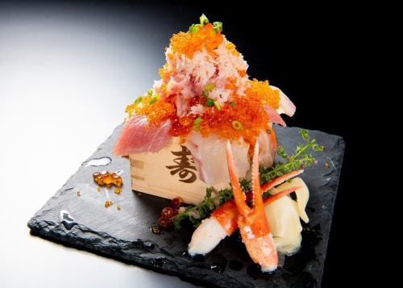
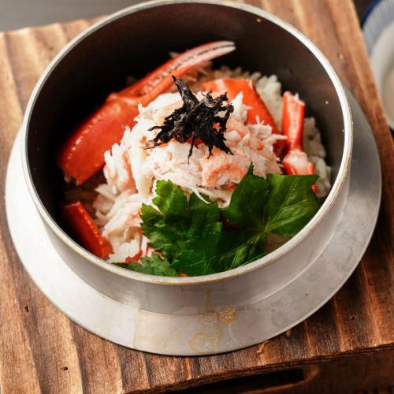

Galerie photos





Kevin, Loïc, May Nhia, Stéphanie, Estelle
Du 5 Avril au 27 Avril 2026
Izakaya crabes et fruits de mer a Ueno, plus ambitieux qu une petite adresse de gare, avec reservation Hot Pepper et horaires clairs.





Kanishin est une adresse utile si vous voulez une sortie fruits de mer plus marquee a Ueno, avec vrais reperes d acces et budget plus haut.
Conversion indicative sur base BCE du 10/03/2026.